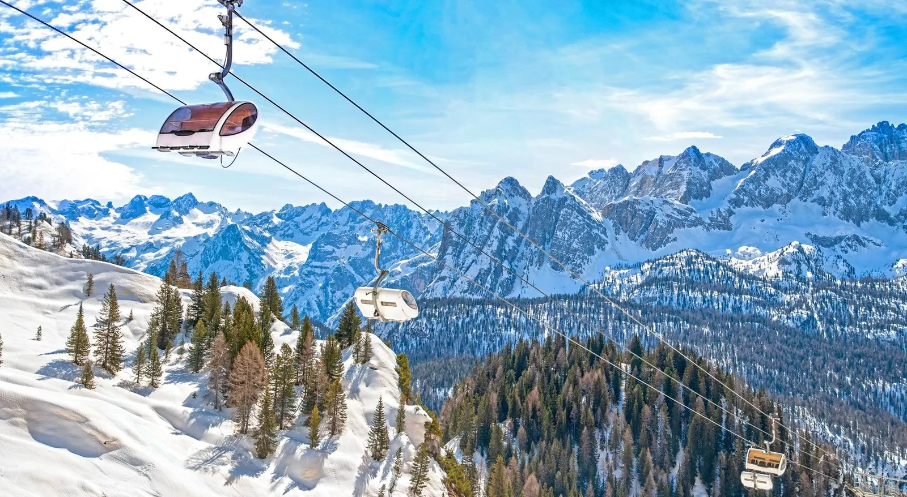

ЗИМСКА ПОНУДА

СКИЈАЊЕ ПО ДОЛОМИТИТЕ
Кортина д'Ампецо, Италија
17.12 - 24.12
Откријте ја зимската убавина на италијанските Доломити и уживајте во незаборавно скијање опкружени со спектакуларни планински пејзажи. Совршена комбинација од снег, адреналин, италијанска кујна и автентична алпска атмосфера.
ЗИМСКА АВАНТУРА
Еден од најпознатите планински и зимски центри во Италија, сместен во срцето на Доломитите и опкружен со спектакуларни снежни врвови. Местото е познато по својата елегантна атмосфера, прекрасната алпска архитектура, главната пешачка зона и богатата понуда на кафулиња, ресторани и продавници. Кортина д'Ампецо нуди совршена комбинација од зимски спортови, планинска природа и автентична италијанска атмосфера.
Еден од најатрактивните зимски центри во Доломитите, познат по прекрасно уредените скијачки патеки и условите за скијање и сноуборд. Посетителите можат да уживаат во зимските спортови опкружени со спектакуларни планински пејзажи, додека оние кои не скијаат можат да уживаат во снежната природа и планинските објекти.
Еден од највпечатливите планински предели во Италија, препознатлив по своите високи карпести врвови и прекрасните снежни пејзажи. Со возење со жичара до повисоките планински предели се овозможуваат панорамски погледи кон спектакуларните врвови на Доломитите, идеални за фотографирање и уживање во природата.
Живописно алпско место во околината на Кортина д'Ампецо, со традиционални куќи, снежни пејзажи и автентична италијанска планинска атмосфера. Прошетката низ селото нуди можност за запознавање со локалниот начин на живот, уживање во планинската природа и одмор во традиционалните локални ресторани.
Состанок со групата на аеродром во Скопје, 2 часа пред летот. Следува директен лет до Трезиво и пристигнување на аеродромот. По завршувањето на аеродромските процедури следува организиран автобукси трансфер до Кортина д'Ампецо и сместување во хотел. По сместувањето е предвидено време за одмор и освежување по патувањето. Во попладневните и вечерните часови следува прва прошетка низ околината, запознавање со местото и уживање во локалната атмосфера. Вечерта е слободна за индивидуални активности, вечера и одмор. Ноќевање во хотел.
Појадок во хотелот и разгледување на Кортина д'Ампецо. Прошетка низ центарот, главната пешачка зона и плоштадот Piazza Angelo Dibona. Следува слободно време за ручек, кафе и шопинг во локалните продавници. Во попладневните часови можност за кратка зимска прошетка и уживање во погледите кон околните Доломити. Вечерта е слободна за вечера и одмор. Ноќевање во хотел.
Појадок и организирано заминување кон скијачката област. Денот е предвиден за скијање и сноуборд на уредените патеки во околината на Кортина д'Ампецо. За туристите кои не скијаат е предвидено слободно време за уживање во планинските пејзажи и престој во планинските објекти. Предвидено е време за ручек во текот на денот. Во попладневните часови следува враќање во хотелот и одмор. Ноќевање во хотел.
Појадок и организирано заминување кон планинската област околу Кортина. Следува возење со жичара до една од достапните планински станици, во зависност од временските услови и работата на жичарите. Предвидено е време за фотографирање и уживање во погледите кон снежните врвови на Доломитите. Потоа следува слободно време за ручек во планинска средина. Во попладневните часови враќање во Кортина и слободно време за одмор. Ноќевање во хотел.
Појадок и организирано заминување кон блиско планинско место во Доломитите. Следува прошетка низ селото и слободно време за разгледување, фотографирање и ручек во локален ресторан. Во попладневните часови следува враќање кон Кортина. Остатокот од денот е слободен за одмор, кафе и индивидуални активности. Ноќевање во хотел.
Појадок во хотелот и слободно претпладне во Кортина д'Ампецо. Можност за прошетка низ центарот, шопинг и посета на локалните продавници. Следува слободно време за ручек. Попладнето е предвидено за одмор или дополнителна зимска активност, според интересот на туристите и условите во скијачката област. Вечерта е слободна за вечера и индивидуални активности. Ноќевање во хотел.
Појадок и заминување кон скијачката област. Последен ден предвиден за скијање и сноуборд, со можност туристите да ги искористат планинските патеки и времето во Доломитите. За оние кои не скијаат е предвидено слободно време за прошетка, фотографирање и престој во планинските објекти. Попладнето следува враќање во Кортина и подготовка за заминување. Вечерта е слободна за последна вечера во Кортина. Ноќевање во хотел.
Појадок во хотелот и одјавување согласно предвиденото време. Следува кратко слободно време во Кортина за кафе и последни фотографии. Потоа организиран автобуски трансфер од Кортина д'Ампецо до аеродромот. По завршување на аеродромските процедури следи директен лет кон Скопје. По пристигнувањето и преземањето на багажот завршува организираното патување.